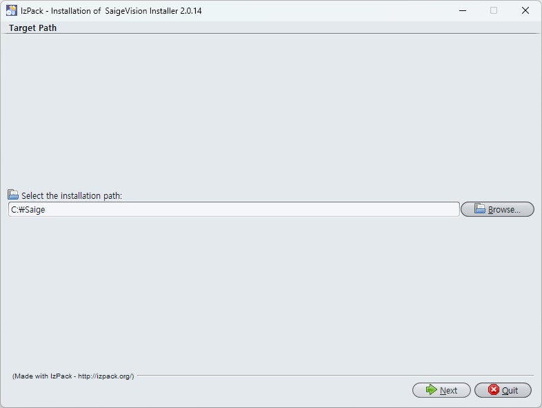
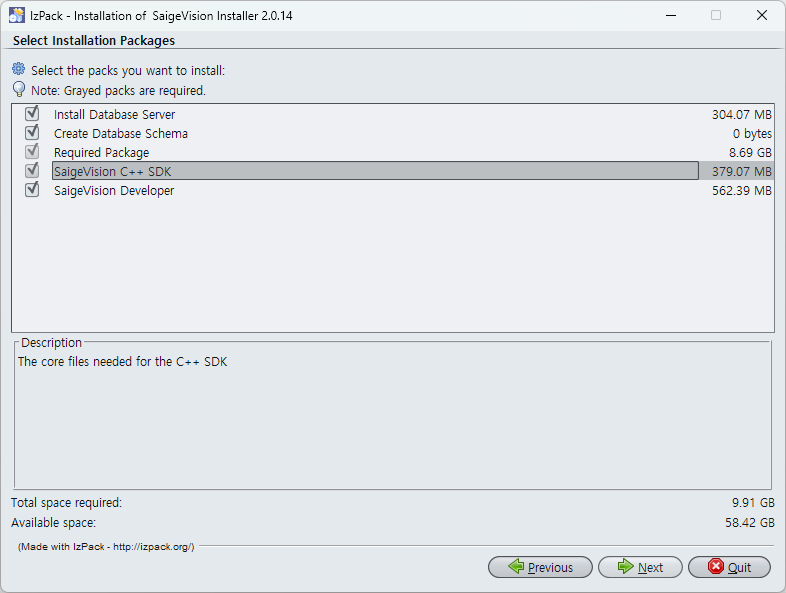
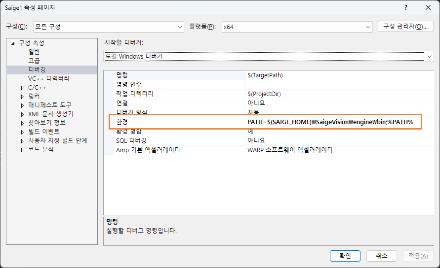
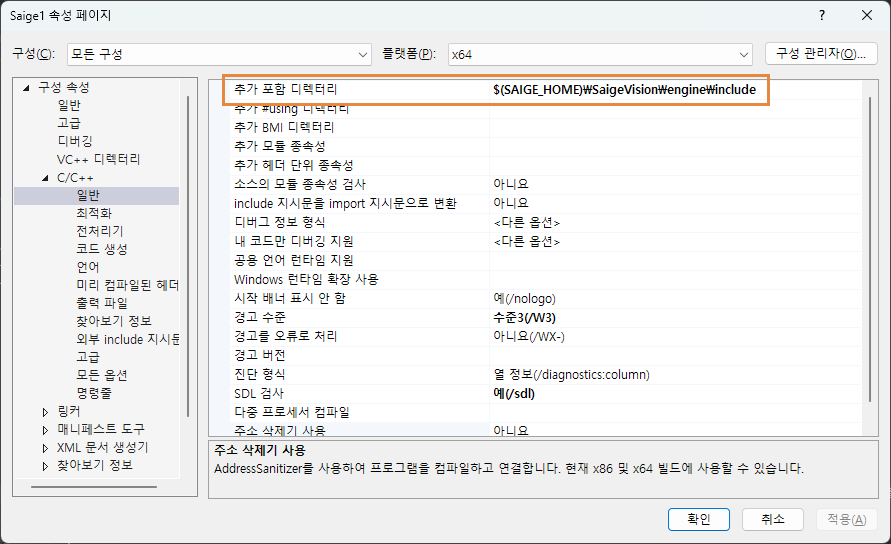
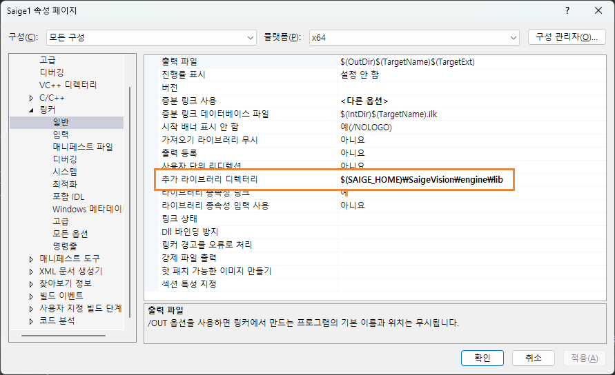
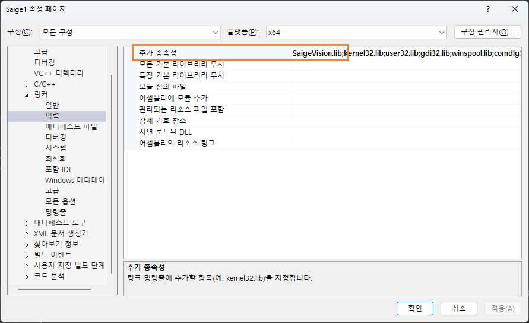
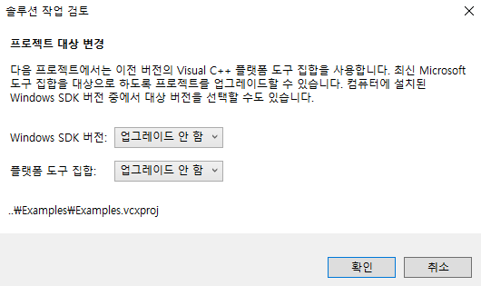
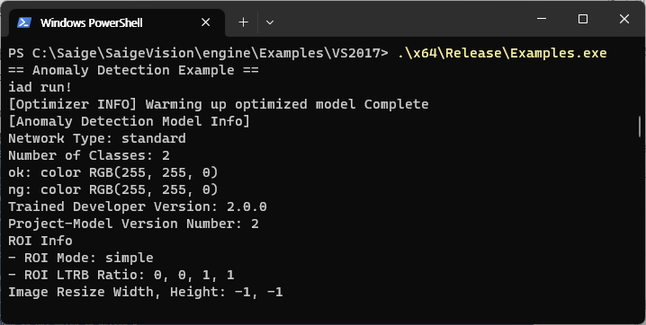
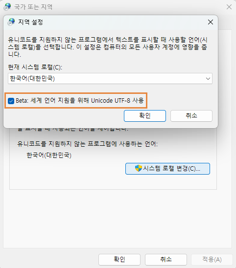

시작하기¶
SaigeVision Runtime C/C++ SDK를 설치하여 Visual Studio 프로젝트에서 사용하거나 예제 프로젝트를 실행해 보세요.
최소 및 권장 시스템 사양¶
| 항목 | 최소 사양* | 권장 사양 |
|---|---|---|
| OS | Windows 10 64bit | |
| CPU | Intel Core i7 | |
| RAM | 16GB | 32GB |
| GPU | GeForce RTX 2060 6GB | GeForce RTX 3090 24GB |
* 최소 사양은 세이지리서치 자체 실험을 통해 해당 환경에서 검사가 성공적으로 수행됨을 확인했다는 의미입니다. 사용하는 모델 및 데이터, 동시에 구동 중인 다른 작업 등에 따라 더 낮은 사양에서 작동할 수도, 더 높은 사양에서 작동하지 않을 수도 있습니다.
준비물¶
- SaigeVision Installer
- NVIDIA Windows Driver 471.96 (*참고)
- SaigeVision 라이센스 동글
- (예제 실행) Visual Studio 2017 이상, Windows 10 SDK
설치¶
SaigeVision Installer를 이용해 SaigeVision을 설치해 주세요. 동봉된 설치 가이드를 참고하시기 바랍니다.
SAIGE_HOME 환경 변수
SaigeVision Installer를 실행하면 처음에 설치 경로를 지정해야 하는데요. 설치가 잘 마무리되면 이때 지정한 설치 경로가 SAIGE_HOME이라는 환경 변수로 자동 설정됩니다.

설치 옵션
SaigeVision 설치 과정에서 Runtime SDK는 반드시 설치되는 반면, Developer는 설치 여부를 선택할 수 있습니다. 목적에 따라 Runtime SDK만 설치하거나 Developer까지 함께 설치해 주세요.

SaigeVision Installer를 통해 설치된 Runtime SDK 관련 항목은 아래와 같습니다.
| 항목 | 위치 |
|---|---|
| Dynamic Library - SaigeVision.dll - SaigeVision_Impl.dll |
{설치 경로}\SaigeVision\engine\bin |
| Static Library - SaigeVision.lib |
{설치 경로}\SaigeVision\engine\lib |
| C/C++ Header - SaigeVisionAPI.h - SaigeVisionUtil.h |
{설치 경로}\SaigeVision\engine\include |
| Python Environment | {설치 경로}\SaigeVision\python |
| Python Modules | {설치 경로}\SaigeVision\module |
| OpenCV 등 | {설치 경로}\SaigeVision\engine\third_party |
| Examples Project | {설치 경로}\SaigeVision\engine\Examples |
Visual Studio 프로젝트에서 사용하기¶
Visual Studio 프로젝트 설정¶
SaigeVision Runtime C/C++ SDK를 Visual Studio 프로젝트에서 사용하기 위해서는 아래 과정을 거쳐야 합니다. 설치 과정을 문제없이 거쳐 SAIGE_HOME 환경 변수가 올바르게 설정되었다고 가정합니다.
- 타깃 플랫폼을
x64로 지정합니다. -
SaigeVision.dll,SaigeVision_Impl.dll두 DLL 파일을 애플리케이션 실행 파일 경로에 복사하거나, 두 DLL 파일이 있는 폴더 경로를 시스템 환경 변수PATH에 추가합니다.Visual Studio를 통해서만 실행하는 경우라면, 다음과 같은 방식으로도 사용 가능합니다.
프로젝트 속성의
디버깅 → 환경에PATH=$(SAIGE_HOME)\SaigeVision\engine\bin;%PATH%를 추가합니다.
-
C/C++ → 일반 → 추가 포함 디렉터리에$(SAIGE_HOME)\SaigeVision\engine\include를 추가합니다.
링커 → 일반 → 추가 라이브러리 디렉터리에$(SAIGE_HOME)\SaigeVision\engine\lib을 추가합니다.
링커 → 입력 → 추가 종속성에SaigeVision.lib;을 추가합니다.
헤더 파일¶
프로젝트 설정을 마치면 SaigeVision 헤더 파일을 include하여 SaigeVision API를 사용하면 됩니다.
-
SaigeVisionAPI.h에는 SaigeVision 추론 기능에 핵심적인 함수, 상수, 구조체, 플래그 등이 정의되어 있습니다. SaigeVision 추론 기능을 사용하려면 반드시 필요합니다.
-
SaigeVisionUtil.h에는 예제를 실행하기 위해 필요한 유틸 함수가 정의되어 있습니다. 이미지 데이터 사용, 추론 결과 시각화 등에 사용됩니다. 유틸 함수가 없어도 SaigeVision 추론 기능을 문제없이 사용할 수 있습니다.
예제 프로젝트 빌드 및 실행하기¶
예제 프로젝트에는 Visual Studio 프로젝트 설정에서 안내한 사항이 모두 적용되어 있습니다. 설치 과정만 잘 마쳤다면 아래 설명을 따라 SaigeVision 예제를 빌드하고 실행해 볼 수 있습니다.
빌드¶
Visual Studio 프로젝트 파일 {설치 경로}\SaigeVision\engine\Examples\VS2017\Examples.vcxproj을 실행해 주세요.
Warning
처음 프로젝트를 열 때, Visual Studio 버전에 따라 솔루션 작업 검토에서 SDK 업그레이드 제안이 발생할 수 있습니다. 이 경우, 업그레이드 안 함을 선택합니다.

빌드 타깃은 다음과 같이 지정해 주세요.
- 구성: Debug 또는 Release
- 플랫폼: x64
Note
include 디렉토리를 찾을 수 없는 경우 빌드 → 솔루션 정리를 실행해 보세요.
빌드에 성공하면 VS2017\x64\{Debug 또는 Release} 경로에 실행파일 Example.exe이 생성됩니다.
실행¶
빌드된 예제는 두 가지 방법으로 실행할 수 있습니다.
- Visual Studio에서
디버깅 시작(단축키F5) 또는디버그하지 않고 시작(단축키Ctrl + F5)을 이용하여 예제 애플리케이션을 실행합니다. -
터미널(cmd 또는 powershell)을 이용하여
Example.exe를 실행합니다.Warning
터미널에서 실행 시 상대경로 문제로 인해
VS2017경로에서 실행해야 정상 작동합니다.예를 들어 설치 경로가
C:\Saige일 때, 터미널에서 아래처럼 실행해야 합니다.PS C:\Saige\SaigeVision\engine\Examples\VS2017> .\x64\Release\Examples.exe
예제 프로젝트를 실행하면 원하는 예제를 선택하여 추론 작업을 수행해 볼 수 있습니다.
예제 코드 안내¶
Examples 프로젝트의 소스 파일에서 각 예제의 코드를 모두 확인할 수 있습니다. 코드를 자유롭게 수정하면서 원하는 대로 SaigeVision 추론 기능을 사용해 보세요. 모든 예제 코드에 기본적인 사용법이 주석으로 작성되어 있으니 참고하시기 바랍니다.
예제 코드에는 SaigeVisionAPI.h, SaigeVisionUtil.h뿐만 아니라 C/C++ standard library들이 include되어 있습니다. 예제에서 사용한 C++ 버전은 C++17입니다.
SaigeVision 추론 기능 사용을 위한 상세 안내는 개발 가이드와 API 레퍼런스를 확인해 주세요.
verbosity 조정¶
verbosity 변수 값을 키우면 콘솔에 출력되는 정보가 많아지고 검출 결과를 시각화할 수도 있습니다.
- 0: 추론 API를 사용하는 데 걸리는 시간을 밀리초 단위로 표시합니다.
- 1: 모델 정보와 인퍼런스 옵션 정보를 출력합니다.
- 2: 추론하는 각 이미지의 경로 및 텍스트로 표현 가능한 추론 결과를 출력합니다.
- 3: 다양한 추론 옵션들을 추가적으로 활성화하고 이에 대응하는 추론 결과를 출력합니다.
- 4: 이미지로 시각화할 수 있는 추론 결과를 OpenCV를 이용해 디스플레이합니다.
에러 처리 방식¶
거의 모든 SaigeVision API가 return 값으로 정수 타입의 에러코드를 반환합니다. 0 이상이면 정상, 음수면 에러가 발생했다는 의미입니다.
에러코드를 SaigeStrError 함수에 전달하면, 해당 에러코드가 어떤 에러인지 설명하는 cstring (char*) 문자열이 반환됩니다.
예제에서 에러가 발생할 경우 상황에 따라 각기 다른 패턴으로 에러를 처리합니다. 각 API 함수의 에러 처리 방식은 다음과 같습니다.
| API | 처리 방식 |
|---|---|
SaigeCreateInferenceHandle SaigeCreateInferenceResult SaigeGetInferenceOption SaigeSetInferenceOption SaigeDestroyInferenceHandle SaigeDestroyInferenceResult |
핸들이 생성되어 있으면 파괴하고 애플리케이션을 종료합니다. |
SaigeGetModelInfo |
에러 메시지를 콘솔에 출력하되, 추론 작업을 진행하는 데는 문제가 없기 때문에 계속 실행합니다. |
SaigeGetImageData SaigeInferFromByteArrray SaigeInferFromMultipleByteArray |
현재 이미지를 스킵하고 다음 이미지 추론으로 넘어갑니다(for 문 안에서 continue) |
SaigeGetInferenceResult{result_name} |
핸들을 파괴하고 애플리케이션을 종료합니다. |
(예시) SaigeSetInferenceOption 함수에서 에러가 발생했을 때
retval = SaigeSetInferenceOption(handle, &options, flags);
if (retval < 0) {
std::cerr << "SaigeSetInferenceOption() failed - " << SaigeStrError(retval) << std::endl;
SaigeDestroyInferenceHandle(handle);
SaigeDestroyInferenceResult(result);
return retval;
}
먼저 stderr로 에러가 발생한 코드 지점과 에러 메시지를 출력합니다.
그리고 추론 옵션 설정이 실패하면 다음 과정을 진행하기 어렵기 때문에 추론 핸들과 결과 핸들을 파괴하고 애플리케이션을 비정상 종료(return retval)합니다.
유의 사항¶
- 유틸 함수 중
SaigeGetImageData()로 불러 온 이미지 데이터는SaigeFreeImageData()로 해제해 주어야 메모리 누수를 막을 수 있습니다. -
예제에서 한글이 포함된 이미지 경로를 읽어 오는 코드가 유니코드 UTF-8만 인식하도록 작성되어 있습니다.
SaigeGetImageData()를 사용할 때 한글 경로로 인한 문제가 발생할 경우 아래 순서대로 따라해 보신 뒤 다시 예제를 실행해 주시기 바랍니다.설정앱에서시간 및 언어메뉴를 선택합니다.기본 언어 설정에 들어가시스템 로캘 변경버튼을 누릅니다.- 하단의
Beta: 세계 언어 지원을 위해 Unicode UTF-8 사용체크박스를 체크한 뒤확인버튼을 누릅니다.
- 안내에 따라 시스템을 재부팅합니다.
-
이미지 경로에 오류가 있는 경우에 대해서는 예외 처리가 잘 되어 있지 않습니다. 별도 메시지 없이 프로그램이 종료될 수 있습니다. (C++17 filesystem 이슈로 추후 개선 예정입니다.)
(중요) 적절한 NVIDIA Driver 버전 및 설정¶
NVIDIA 그래픽 드라이버의 버그 내지는 사이드이펙트로 검사 시간이 비정상적으로 늘어나는 경우가 있습니다. 따라서 다음 가이드에 따르기를 권장합니다.
- NVIDIA GeForce RTX 30 시리즈 이하: 471.96 link
- NVIDIA GeForce RTX 40 시리즈 이상: 515.15 이상 또는 최신버전
- NVIDIA 제어판 설정
- 저지연 모드: 켜기
- 전원 관리 모드: 최고 성능 선호